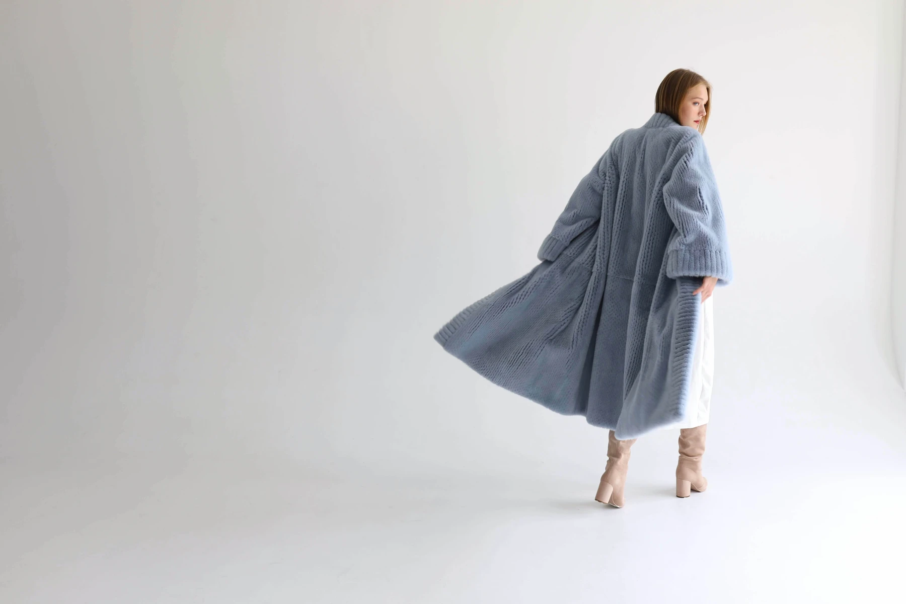

Модели ателье
Шубы, пальто и куртки индивидуального пошива. Откройте модель, чтобы рассмотреть работу и взять её за основу для примерки.
Шубы, пальто и куртки индивидуального пошива. Откройте модель, чтобы рассмотреть работу и взять её за основу для примерки.